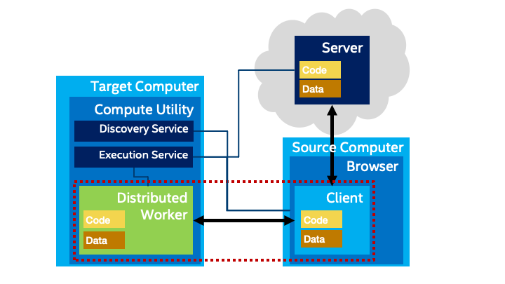

Comments are welcome via #GitHub by 21 December 2023: https://github.com/w3c/PNG-spec/issues
The @w3c Portable Network Graphics (PNG) (3rd Edition) is in #CandidateRecomendation status. PNG is an extensible file format for the lossless, portable, well compressed storage of static and animated raster images #timetoimplement
https://www.w3.org/TR/png-3/ https://twitter.com/w3c/status/1704786723895398442
https://twitter.com/w3cdevs/status/1708767364341170185The @w3c Web&Networks Interest Group published "Client-Edge-Cloud coordination Use Cases and Requirements" as a first draft note #EdgeComputing #WebNN #CloudIT #WebWorkers
https://www.w3.org/TR/2023/DNOTE-edge-cloud-reqs-20230926/
This document explores how the traditional client/server architecture used by #WebApps could be improved by including #EdgeComputing resources. An architectural proposal suggests expanding the capabilities of Workers.
https://twitter.com/w3cdevs/status/1708850646114312440Watch this #w3cTPAC demo üé¨ where Michael McCool presents #DistributedWorkers as a proposal to extend the web client program model to support distributed computing #WASM #WebPerformance
https://youtu.be/wb58LeRkv7s
https://twitter.com/w3cdevs/status/1708850653622051074Feedback is welcome in the related #GitHub: https://github.com/w3c/edge-computing-web-exploration/
https://twitter.com/w3cdevs/status/1708850656683917477October@w3c: #WoT, #automotive, #a11y. More in https://www.w3.org/events/
5 Oct.: The @wot #CommunityGroup organizes a meetup online #WoT https://www.linkedin.com/events/wotcgmeetup10-seamandwot7114488421712044032/about/
https://twitter.com/w3cdevs/status/170911061309011999310-12 Oct.: Kevin White and @shawna_slh of the @wai team speak @mEnablingSummit, #WashingtonDC üá∫üá∏
https://m-enabling.com/
https://twitter.com/w3cdevs/status/170911061858471554311 Oct.: W3C Project & Strategy Lead @plhw3org gives a talk on "Moving the Web and Automotive Forward" @COVESAglobal's "All Member Meeting", #Michigan üá∫üá∏
https://www.eventleaf.com/e/COVESAAMM23US
https://twitter.com/w3cdevs/status/1709110621336125517Accessibility is an integral part of W3C Inc.'s mission and vision, and during #w3cTPAC, @shawna_slh gave an activity update for @wai in 2023 #a11y
https://www.w3.org/2023/09/TPAC/ac-activities-wai.html (w/ slides and transcript)
Also on #YT: https://youtu.be/rJy7HeRio6A
There is a lot happening, incl. #WCAG22 nearing recommendation and progress on translations (35 languages today!). Stay updated on publications and monthly updates at https://www.w3.org/WAI/update/
https://twitter.com/w3cdevs/status/1709560714006786118In 2024 and beyond, the @wai team is setting strategic priorities, defining their mission and vision to better support #accessibility. With 16+ WGs and TFs, they are looking for skilled technical writers, editors, etc. Together, we can create a more accessible web!
https://twitter.com/w3cdevs/status/1709560721074159941At #w3cTPAC, @pchampin explained that several W3C groups are actively working on data-related Web standards: #RDFStar, #VerifiableCredentials, Dataset Exchange, #JSONLD, #WoT
Find out more at https://www.w3.org/2023/09/TPAC/ac-activities-data (w/ slides an transcript)
Also on #YT: https://youtu.be/TBIkRB6c-d8
https://twitter.com/w3cdevs/status/1709587353243644189üëèüëèüëè Congrats to editors @alastc, Chuck Adams, @RLBMontgomery, Michael Cooper and @awkawk for the newly published @w3c #WebStandard "Web Content Accessibility Guidelines (WCAG) 2.2" #accessibility #a11y #WCAG22 #timetoadopt https://twitter.com/w3c/status/1709914043643785230

https://twitter.com/w3cdevs/status/1709932170083787022üé¨The recordings of last week's talks at the @w3c workshop #SecureWebForward are now published! #security #developers
Find them all w/ slides and transcripts in https://www.w3.org/2023/03/secure-the-web-forward/agenda.html
Also avail. via a #YT playlist: https://www.youtube.com/watch?v=U68zPZSc7nk&list=PLNhYw8KaLq2V-EvC1Mcdms3xvkrXjNEpX
https://twitter.com/w3cdevs/status/170993769407021902848 new spec. proposals were reviewed in 2023, making sure they align with the principles of the web. The @tag also facilitate task forces, e.g. the joint task force with the Privacy #InterestGroup on #Privacy Principles.
Learn more https://www.w3.org/2001/tag/

The @tag (Technical Architecture Group) is the guiding light for web architecture principles and problem-solving. At #w3cTPAC, @torgo gave an update on the group's activities. Find out more: https://www.w3.org/2023/09/TPAC/ac-tag (w/ slides + transcript)
Also on #YT: https://youtu.be/xmnyD6-TnjY
https://twitter.com/w3cdevs/status/1709999257158111525W3C's privacy efforts are continuing to expand, with plans for two 2 Working Groups, Private Advertising Technology #PAT, #Privacy. Get details and learn more from Sam Weiler, W3C Privacy Lead, w/ slides and transcript: https://www.w3.org/2023/09/TPAC/ac-activities-privacy
Also on #YT: https://youtu.be/pBIq-pIU2Is
https://twitter.com/w3cdevs/status/1710208097841459635Coding contest forüá´üá∑students: to develop a #WebApp for mobile devices #MiniApps, #WebXR, #WebRTC, #PWAs, etc.
Win üèÜ for the 3 best projects!
Please register before 12 Oct.: https://systematic-paris-region.org/evenement/web-technologies-for-applications-coding-contest/ https://twitter.com/Pole_Systematic/status/1709584502647865639
https://twitter.com/w3cdevs/status/1710214188885270920#SecureWebForward Your web app as a bottle of shampoo! Jan Kowalleck describes Software Bill of Materials (#SBOMs) applied to #WebApps #security
Paper and slides: https://www.w3.org/2023/03/secure-the-web-forward/agenda.html#session-1
üé¨ https://youtu.be/RhHT3R0lIPg
https://twitter.com/w3cdevs/status/1710219039824367959#SecureWebForward Gary O'Neall describes possible improvements to #SBOMs to ease discovery, handle complexity and improve interoperability.
#security #standardization
Papers and slides: https://www.w3.org/2023/03/secure-the-web-forward/agenda.html#session-1
Also on #YT: üé¨ https://youtu.be/M4s8JY4DQTI
https://twitter.com/w3cdevs/status/1710247257621090548In this talk, @dontcallmeDOM reviews the intersections of @w3c work and the impact of recent developments in #AI: https://www.w3.org/2023/09/TPAC/ac-activities-ai (üé¨ w/ slides + transcript)
Also on #YT: https://youtu.be/E0TbotgqAgw?si=AM7rJguK5HaUe3Kv
W3C has active ongoing work on making #browsers a better platform to run #MachineLearning models through its Web Neural Network API #WebNN, incl. recent work in adding support for Transformers, a key component to #GenerativeAI models
https://github.com/webmachinelearning/webnn/issues/375
https://twitter.com/w3cdevs/status/1710263647333679485The @w3c community still needs a lot of discussions to figure out the right answers to these questions.
Two #w3cTPAC breakouts of interest: 1⃣ "Impact of #GenerativeAI on the Web" https://www.w3.org/2023/09/13-GenerativeAI-minutes.html  2⃣ "#EthicalAI in a Rapidly Evolving Landscape" http://www.w3.org/2023/09/tpac-breakouts/72-minutes.pdf
https://twitter.com/w3cdevs/status/1710263657223925998But the intersection between Web and AI spans a much broader set of questions: ethical impact of relying on #AI and #MachineLearning models ; impact on content creation, on user interactions, on content re-use, and the risk of creating new centralization bottlenecks
https://twitter.com/w3cdevs/status/1710263654522785879#SecureWebForward What if #security researchers could audit the source code of #WebApps sent to any user, and not just to themselves? @twisstle presents the "Source Code Transparency" proposal in https://www.w3.org/2023/03/secure-the-web-forward/agenda.html#session-1 (slides + üé¨transcript)
Also on #YT: https://youtu.be/qhc_3W3JZAw
https://twitter.com/w3cdevs/status/1710285891665629495#SecureWebForward Hardened #JavaScript creates a more secure runtime environment for #WebApp code. @naugtur reviews the Compartment proposal that could let code escape, such as access to DOM and the creation of realms.
▶️ https://www.w3.org/2023/03/secure-the-web-forward/agenda.html#session-2
üé¨ https://youtu.be/U68zPZSc7nk
https://twitter.com/w3cdevs/status/1710331893521006905#SecureWebForward
Building on @naugtur's insights, @WeizmanGal presents ways to trap the many ways to create #JavaScript realms in a #WebApp. It comes with a performance cost. Could native hooks be created instead?
https://www.w3.org/2023/03/secure-the-web-forward/agenda.html#session-2
üé¨ https://youtu.be/zxO9vW4qwns
https://twitter.com/w3cdevs/status/1710363364411449767#SecureWebForward
@arturjanc presents a #security perspective on #cookies with a model aligned with the current direction to deprecate third-party cookies taken by #browser vendors https://www.w3.org/2023/03/secure-the-web-forward/agenda.html#session-2 (slides+transcript)
https://youtu.be/H2k0aPIWTTo
https://twitter.com/w3cdevs/status/1711384772658794668#SecureWebForward ~1B websites run jQuery! And ~500M of these run an "outdated and unpatched version" of #jQuery. @tobie is focusing on #security holes that jQuery opens in the web browser sandbox that don't exist without it: https://www.w3.org/2023/03/secure-the-web-forward/agenda.html#session-3
https://youtu.be/efOljAYQz2I
https://twitter.com/w3cdevs/status/1711402891087405431#SecureWebForward CSP, CORS, SRI, strict mode... Web app #security is complicated. @floscholz explores a program that @OpenWebDocs could perhaps implement to enhance @MDN documentation on security. https://www.w3.org/2023/03/secure-the-web-forward/agenda.html#session-3 (w/ slides+transcript)
https://youtu.be/aAx6-wPaOHc
https://twitter.com/w3cdevs/status/1711720735511871741#SecureWebForward Ben Sternthal and Joe Sepi review @openjsf projects to customize OpenSSF and OWASP best practices, and create a #JavaScript #security training. https://www.w3.org/2023/03/secure-the-web-forward/agenda.html#session-3 (w/ slides and transcript)
Also on #YT: https://youtu.be/5mP5qTmdzcI
https://twitter.com/w3cdevs/status/1711752695928016904At #w3cTPAC, Shi Ling highlighted the use of #WebAssembly to improve #WebPerf and introduced JWST (JavaScript-to-WASM Static Translator)
https://www.w3.org/2023/09/TPAC/ac-lt-wasm-perf (üé¨ w/ slides and transcript)
Also on #YT: https://youtu.be/vEVv-8kHyyM
#developers can use #JavaScript or #TypeScript to develop apps, and then JWST transforms that code into high-performance WebAssembly, up to 30% to 50% faster than running it with node.js #nodejs #WASM
https://twitter.com/w3cdevs/status/1714598177829990714Addressing challenges such as #AI's deployment and misinformation while preserving the openness of the Web require documenting the foundational principles of @w3c. A #w3cTPAC talk by @TzviyaSiegman
https://www.w3.org/2023/09/TPAC/ac-vision (üé¨ w/ slides and transcript)
https://youtu.be/uDEsXozzxik
This text clarifies the role and importance of W3C and its principles, rooted in #interoperability, #accessibility, #internationalization and #privacy
https://www.w3.org/TR/w3c-vision/
https://twitter.com/w3cdevs/status/1714650927372874237At #w3cTPAC, @plhw3org an Ding Wei discussed priorities and processes related to incubating new ideas and technologies within @w3c.
https://www.w3.org/2023/09/TPAC/ac-future-work (üé¨ w/ slides and transcript)
Also on #YT: https://youtu.be/3naC3iGkbAs
https://twitter.com/w3cdevs/status/1714965725700395476